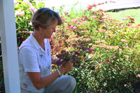
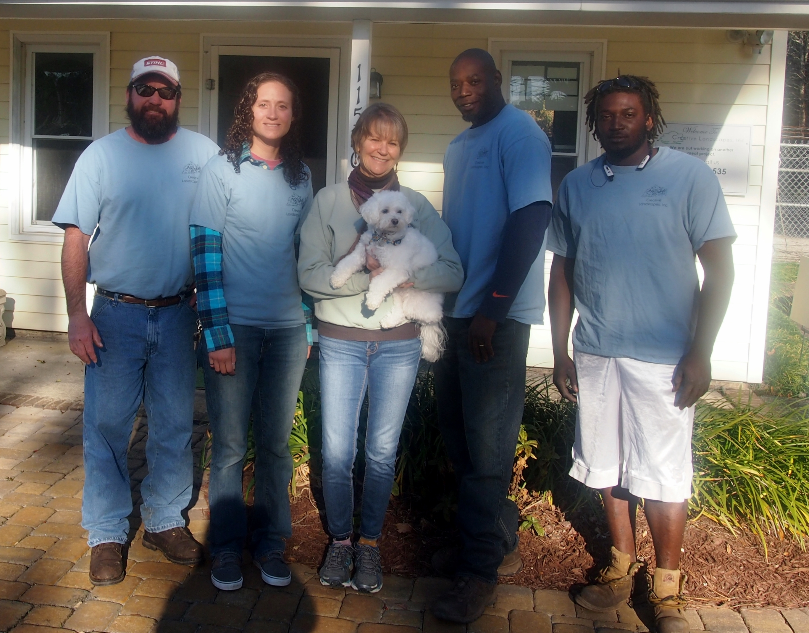

Creative Landscapes Business Profile
Creative Landscapes, Inc. was established in 1976 under the name of Inlet Landscaping. Sharon Turner joined the company in 1978 immediately upon graduation from Clemson. Sharon bought out the other partners in 1980. She renamed and relocated it in 1984 to its current location, 11520 Highway 17 Bypass, Murrells Inlet, SC.
Principals:

- BS in Horticulture and landscape design from Clemson
University
- Certified Nursery Professional with South Carolina Nursery and
Landscape Association
- Certified member of Association of Professional Landscape
Designers ( APLD ) Treasurer 2002-2003
- Native of Georgetown, South Carolina
Key employees:

From left to right: TJ Skerl, Sarah Rion, Sharon Turner (and Bella), John Smalls, and Cameron Huggins
- Foreman, with the company since 1995
- With the company since 2010
- Landscape Designer, art degree from USC
- Master Gardener
Professional organizations:
- APLD (Association of Professional Landscape Designers)
- SCNLA (South Carolina Nursery and Landscape Association)
- SNA (Southern Nursery Association)
- MB Chamber of Commerce Better Business Bureau
Other facts:
- Listed with Dun and Bradstreet
- Conduct random drug testing on employees
- Annual gross just under 1 million
- Project size range $5,000 - $500,000+
- Certified Woman Owned Business # 0315880105
- Bonded and insured